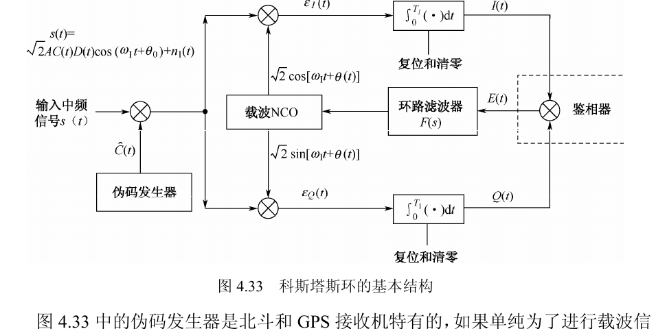
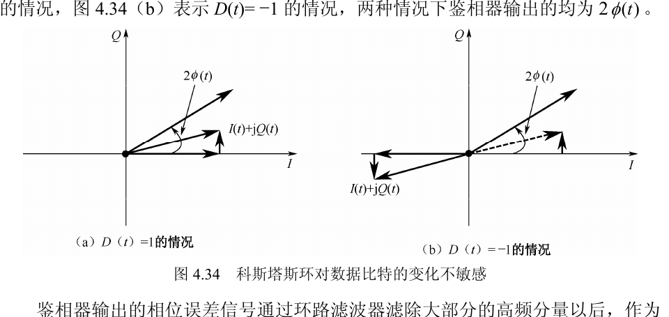
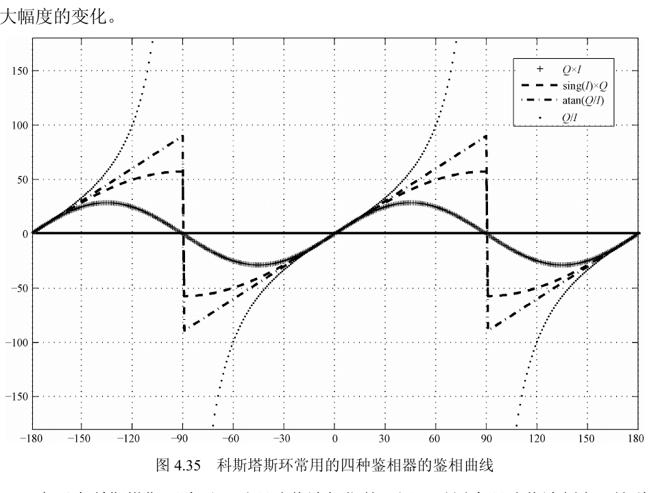
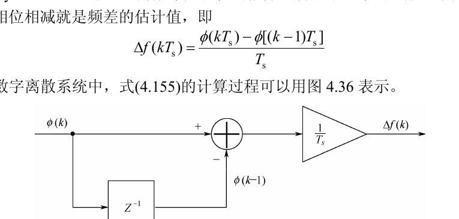
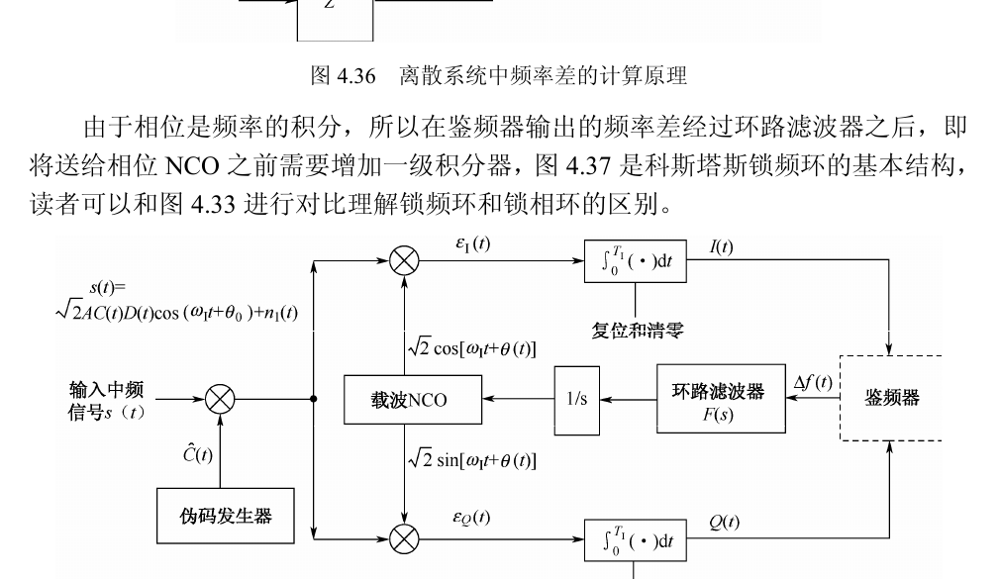
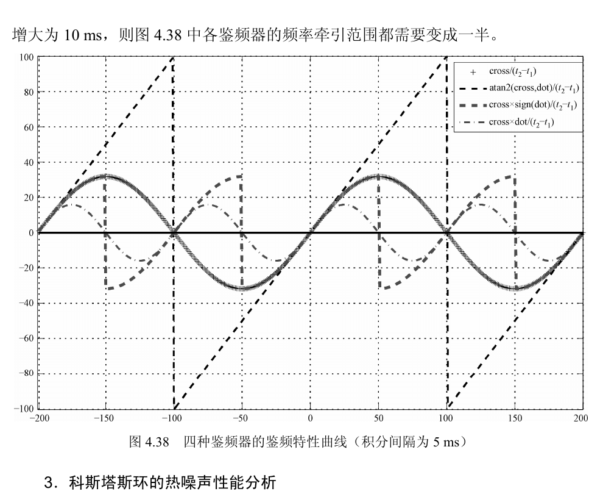
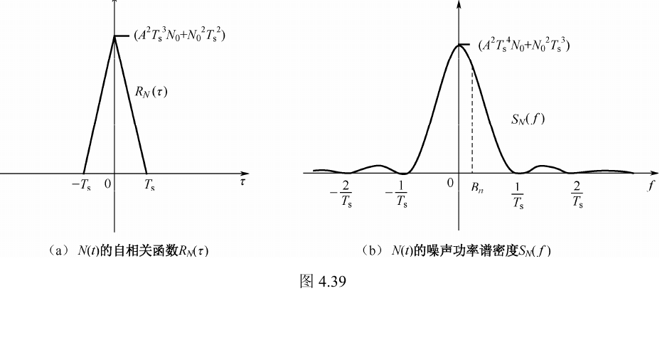

4.2.3 载波跟踪环
说明：这一版按“正文提取 + 公式重排 + 图表复用”整理
4.2.3。正文以教材 PDF 文字层为基础，按语义重新分段；关键公式改成 MathJax 形式；图 4.33 至图 4.39 使用教材页图裁切；表 4.3 和表 4.4 改成可读表格。
HTML 发布路径：site/notes/tracking/chapter-4-2-3-carrier-tracking/index.html
一、提取说明
- 章节标题：
4.2.3 载波跟踪环 - 原 PDF 物理页：第
59页到第69页 - 教材页码：第
175页到第185页 - 正文策略：优先整理为可复制、可搜索、可继续编辑的文本，不再用整页截图充当正文
- 排版策略：按“小节标题 - 正文段落 - 关键公式 - 图表/表格”组织，并在标题里保留教材页码范围
- 配图策略：正文中的图继续使用教材原书图，当前发布页已裁出图 4.33 至图 4.39
二、正文整理
1. 科斯塔斯环的基本形式
1.1 环路结构与伪码剥离（教材第 175-176 页）
北斗和 GPS 接收机中的载波同步大多通过科斯塔斯环实现。科斯塔斯环由 John P. Costas 在 20 世纪 50 年代提出，被认为“对现代数字通信领域产生了非常深远的影响”[22]。本节讨论的重点，是它在卫星导航接收机基带信号处理中的具体实现。
图 4.33 给出了科斯塔斯环的基本结构。它的主要单元包括伪码发生器、同相与正交两路乘法器、载波 NCO、积分输出单元、鉴相器和环路滤波器。输入信号先做伪码剥离，再与本地载波的同相、正交分量相乘，积分得到 \(I(t)\) 和 \(Q(t)\)，再由鉴相器给出相位误差信号，经环路滤波器反馈控制 NCO，完成对输入载波的跟踪。
这里假设输入中频信号为
\[ s(t)=\sqrt{2}A C(t)D(t)\cos(\omega_I t+\theta_0)+n_I(t) \]
其中，\(A\) 为信号幅度，\(C(t)\) 为伪随机码，\(D(t)\) 为数据比特，\(\omega_I\) 为载波频率，\(\theta_0\) 为载波初始相位，\(n_I(t)\) 为高斯白噪声；本节先忽略噪声项，噪声性能将在后面单独分析。
伪码发生器是北斗和 GPS 接收机中特有的模块。若只是一般的载波同步，伪码发生器并非必需；但对测距信号来说，它必须先把伪码去掉，这样积分器才能做大于 1 ms 的相干积分，否则伪码分量会让积分结果表现得像噪声。教材中将本地伪码记为 \(\hat{C}(t)\)，并定义
\[ \hat{C}(t)=C(t+\tau) \]
其中 \(\tau\) 为本地伪码与输入伪码的相位差。当伪码跟踪环稳定锁定时，\(\tau\approx 0\)，因此有
\[ C(t)\hat{C}(t)\approx C^2(t)=1 \]
于是经过本地伪码相乘后，输入信号完成伪码解扩，可近似写成
\[ s(t)\hat{C}(t)\approx \sqrt{2}AD(t)\cos(\omega_I t+\theta_0) \tag{4.146} \]
式 (4.146) 中的 \(D(t)\) 是数据比特。对 GPS 与北斗 D1 码信号，其数据码周期为 20 ms；对北斗 D2 码信号，其数据周期为 2 ms。

1.2 积分时间与 I/Q 支路输出（教材第 176-177 页）
积分器的长度一般不要超过数据码周期，否则积分区间会跨过数据比特跳变，导致部分积分结果正负抵消，严重时甚至产生错误的相位误差信号。\(T_I\) 一般取 1 ms 的整数倍，例如 5 ms、10 ms、20 ms，因为北斗和 GPS 的伪码周期都是 1 ms。若要进行超过 1 ms 的积分，通常要先完成比特同步；对北斗 D1 码，还要额外处理二级码剥离问题。
本地载波 NCO 输出两路正交信号：一路是同相路 \(\sqrt{2}\cos[\omega_I t+\theta(t)]\)，另一路是正交路 \(\sqrt{2}\sin[\omega_I t+\theta(t)]\)。这里 \(\theta(t)\) 表示本地载波相位相对输入载波的差异部分，它既可能来自初始相位差，也可能来自频率差。
于是同相、正交支路乘法器的输出分别为
\[ \varepsilon_I(t)=AD(t)\cos(\omega_I t+\theta_0)\cos[\omega_I t+\theta(t)] \tag{4.147} \]
\[ \varepsilon_Q(t)=AD(t)\cos(\omega_I t+\theta_0)\sin[\omega_I t+\theta(t)] \tag{4.148} \]
教材在式 (4.147) 和式 (4.148) 中略去了噪声项。将两式送入积分器，并利用前面锁相环章节的积分结果，可得
\[ I(t)=AD(t)T_I\,\mathrm{sinc}\!\left(\frac{\Delta\omega T_I}{2}\right)\cos\!\left[\frac{\Delta\omega}{2}T_I+\phi(t)\right] \tag{4.149} \]
\[ Q(t)=AD(t)T_I\,\mathrm{sinc}\!\left(\frac{\Delta\omega T_I}{2}\right)\sin\!\left[\frac{\Delta\omega}{2}T_I+\phi(t)\right] \tag{4.150} \]
其中 \(\Delta\omega=\theta'(t)\) 为输入载波与本地载波的频率差，且
\[ \phi(t)\triangleq \theta(t)-\theta_0 \tag{4.151} \]
也就是说，\(\phi(t)\) 就是输入信号与本地载波之间的相位差。
进入载波跟踪阶段后，输入频率与本地频率已经十分接近，通常满足 \(\Delta\omega\ll 1/T_I\)，因此 \(\Delta\omega T_I\approx 0\)，式 (4.149) 与式 (4.150) 可以近似为
\[ I(t)\approx AD(t)T_I\cos[\phi(t)] \tag{4.152} \]
\[ Q(t)\approx AD(t)T_I\sin[\phi(t)] \tag{4.153} \]
经典科斯塔斯环使用乘法器实现鉴相，此时相位误差信号为
\[ E(t)=I(t)Q(t)=\frac{1}{2}A^2D^2(t)T_I^2\sin[2\phi(t)] \tag{4.154} \]
由于 \(D^2(t)=1\)，乘法器型鉴相器对数据比特的 \(+1/-1\) 跳变不敏感，这正是科斯塔斯环在存在导航电文时仍然适合做载波跟踪的重要原因。
1.3 数据比特不敏感性与图示（教材第 178 页）
当 \(\phi(t)\) 很小时，有 \(\sin[2\phi(t)]\approx 2\phi(t)\)。教材指出，这里可以用 \(\sqrt{I^2(t)+Q^2(t)}\) 做归一化，使输出更接近线性的相位误差。图 4.34 直观展示了这一点：无论 \(D(t)=1\) 还是 \(D(t)=-1\)，鉴相器输出的相位误差都保持为同一个 \(2\phi(t)\)，因此不会因为数据比特翻转而改变相位跟踪的方向。
当相位已经稳定锁定时，\(2\phi(t)\approx 0\)。此时由式 (4.149) 和式 (4.150) 可见，I 路积分器主要输出数据比特，而 Q 路仅剩噪声分量，所以后续导航电文解调通常直接从 I 路取数。

2. 鉴相器和鉴频器
2.1 常用鉴相器与表 4.3（教材第 178 页）
科斯塔斯环可以采用多种鉴相器。教材在表 4.3 中列出了北斗与 GPS 接收机里常用的四种：\(I(t)\times Q(t)\)、\(\mathrm{sign}[I(t)]\times Q(t)\)、\(Q(t)/I(t)\) 和 \(\mathrm{atan}[Q(t)/I(t)]\)。其中 \(\mathrm{sign}[\cdot]\) 表示取符号操作，输出值为 \(+1\) 或 \(-1\)。
| 鉴相器类型 | 输出的相位差 | 主要性质 |
|---|---|---|
| \(Q(t)\times I(t)\) | \(\sin[2\phi(t)]\) | 经典 Costas 环鉴相器，在低信噪比情况下有近似优化的鉴相特性，但鉴相斜率受信号幅度影响较大。 |
| \(Q(t)\times \mathrm{sign}[I(t)]\) | \(\sin\phi(t)\) | 在高信噪比情况下有近似最优的鉴相特性，运算量较小，但仍受信号幅度影响。 |
| \(Q(t)/I(t)\) | \(\tan\phi(t)\) | 在高信噪比和低信噪比情况下都接近最优，鉴相斜率不受信号幅度影响，但在相差为 \(\pm 90^\circ\) 时会发散。 |
| \(\mathrm{atan}[Q(t)/I(t)]\) | \(\phi(t)\) | 两象限反正切函数，在高信噪比和低信噪比下都有最优的鉴相特性，鉴相斜率不受信号幅度影响，但运算量最大。 |
2.2 鉴相范围与线性特性（教材第 179 页）
表 4.3 中四种鉴相器的输出并不难由式 (4.152) 和式 (4.153) 推出。教材特别强调，它们的鉴相范围都落在 \(-90^\circ\) 到 \(+90^\circ\) 之间。最容易误解的是 \(\mathrm{sign}[I(t)]\times Q(t)\)：虽然输出形式是 \(\sin\phi(t)\)，看起来周期应为 \(360^\circ\)，但由于 \(\mathrm{sign}[I(t)]\) 在 \(\pm 90^\circ\) 发生符号翻转，最终等效鉴相范围仍然收敛到 \([-90^\circ,90^\circ]\)。
图 4.35 对比了四种鉴相器的相位差输出曲线。图中只保留相位差项，并把相差统一换算成角度。从线性度看，\(\mathrm{atan}[Q(t)/I(t)]\) 最好，但运算量也最大；\(\mathrm{sign}[I(t)]\times Q(t)\) 的线性度次之，而且实现代价更小；\(Q(t)/I(t)\) 和 \(\mathrm{atan}[Q(t)/I(t)]\) 由于存在除法，可能出现除零问题，但又省去了额外归一化；\(I(t)\times Q(t)\) 与 \(\mathrm{sign}[I(t)]\times Q(t)\) 运算量最小，但必须额外处理幅度归一化。

2.3 FLL 的基本原理与锁频结构（教材第 180 页）
科斯塔斯环不仅能跟踪载波相位，也可以跟踪载波频率。将鉴相器替换成鉴频器后，就得到锁频环 FLL（Frequency Lock Loop），有些文献也称其为 AFC（Automatic Frequency Control）环路。
由于频率是相位的微分，最基本的鉴频器就是用相邻两次相位的差来估计频差：
\[ \Delta f(kT_s)=\frac{\phi(kT_s)-\phi[(k-1)T_s]}{T_s} \tag{4.155} \]
图 4.36 展示了离散系统中频率差的计算方法。相位差先通过一拍延迟与减法器求差，再除以采样间隔 \(T_s\)，就得到频率估计值。
由于相位是频率的积分，因此鉴频器输出的频率差在进入相位 NCO 之前，需要先经过环路滤波器并再增加一级积分器。图 4.37 就是教材给出的科斯塔斯 FLL 基本结构。与图 4.33 相比，它的主区别在于反馈量从“相位差”变成了“频率差”。
频率环通常比相位环更稳定，频率捕获范围也更大。实际接收机里，若输入信号与本地载波之间的频率差较大，一般先用 FLL 把频差逐步牵引到相位环的捕获范围内，再切换 PLL 做精细跟踪。


2.4 常用鉴频器与表 4.4（教材第 181-182 页）
完成信号捕获之后，数据比特跳变时刻通常仍未知，同时输入信号与本地载波的频率差往往还比较大（约 \(100\sim 500\) Hz）。这时直接使用相位跟踪环往往无法保持锁定，因此需要先经历一个“频率牵引”的过程。教材在表 4.4 中列出了常用的四种鉴频器方案。
其中点乘与叉乘定义如下：
\[ \text{点乘}=I_kI_{k+1}+Q_kQ_{k+1}=A^2D^2(t)T_I^2\cos[\phi(k+1)-\phi(k)] \tag{4.156} \]
\[ \text{叉乘}=I_kQ_{k+1}-Q_kI_{k+1}=A^2D^2(t)T_I^2\sin[\phi(k+1)-\phi(k)] \tag{4.157} \]
式 (4.156) 和式 (4.157) 的推导用到了式 (4.152) 和式 (4.153)，并同样忽略了噪声项。除 atan2 四象限反正切鉴频器外，其余三种鉴频器都与输入信号幅度有关，因此通常要做归一化处理，常见归一化因子为 \(1/\sqrt{I^2(t)+Q^2(t)}\) 或 \(1/[I^2(t)+Q^2(t)]\)。此外，所有鉴频器都还需要除以相邻两次积分间隔 \((t_2-t_1)\)。
教材还特别指出：无论采用哪种鉴频器，都必须保证相邻两次积分时刻没有跨过数据比特跳变边沿。否则相邻时刻的 \(D(t)\) 会发生变化，式 (4.156) 和式 (4.157) 中的 \(D^2(t)=1\) 假设不再成立，从而输出错误的频率差。因此，叉乘类与点乘类鉴频器最好在完成比特同步后使用。
| 鉴频器类型 | 输出频差 | 鉴频特性 |
|---|---|---|
| 叉乘 | \(\dfrac{\sin(\phi_2-\phi_1)}{t_2-t_1}\) | 低信噪比时有接近优化的鉴频特性，受信号幅度影响较大。 |
| 叉乘 \(\times \mathrm{sign}(\text{点乘})\) | 分段的 \(\dfrac{\sin(\phi_2-\phi_1)}{t_2-t_1}\) | 高信噪比时有接近优化的鉴频特性，受信号幅度影响较大。 |
| \(\mathrm{atan2}(\text{叉乘},\text{点乘})\) | \(\dfrac{\phi_2-\phi_1}{t_2-t_1}\) | 最大似然估计，在高、低信噪比下都有优化的鉴频特性，受幅度影响不大，但运算量较大。 |
| 叉乘 \(\times\) 点乘 | \(\dfrac{\sin[2(\phi_2-\phi_1)]}{t_2-t_1}\) | 高信噪比时有接近优化的鉴频特性，受信号幅度影响较大。 |
注：点乘 \(=I_1I_2+Q_1Q_2\)，叉乘 \(=I_1Q_2-I_2Q_1\)；下标 1、2 表示相邻时间间隔的积分器输出。
图 4.38 给出了这四种鉴频器的鉴频特性曲线。教材指出，atan2 四象限反正切鉴频器的线性度最好，但运算量最大；叉乘鉴频器与 atan2 鉴频器的频率牵引范围相同，都是 \(-100\) Hz 到 \(+100\) Hz；叉乘 \(\times \mathrm{sign}(\text{点乘})\) 鉴频器属于分段的 \(\sin(\phi_2-\phi_1)\) 形式，其频率牵引范围只有 \(-50\) Hz 到 \(+50\) Hz。频率牵引范围与积分时间间隔成反比，因此积分时间增大时，牵引范围也会相应缩小。

3. 科斯塔斯环的热噪声性能分析
3.1 热噪声模型与 I/Q 输出（教材第 182-183 页）
前面各小节为了突出信号部分而省略了噪声项。本节恢复噪声分析，并假设噪声为高斯白噪声。研究对象是科斯塔斯环中的 PLL，鉴相器类型取 \(I(t)\times Q(t)\)，相干积分时间长度记为 \(T_I\)。
教材先把输入信号中的噪声写成窄带高斯随机过程：
\[ n_I(t)=\sqrt{2}n_c\cos(\omega_I t+\theta_0)+\sqrt{2}n_s\sin(\omega_I t+\theta_0) \tag{4.158} \]
其中 \(n_c\) 与 \(n_s\) 的单边噪声功率谱密度都为 \(N_0\)，二者是零均值、相互独立的平稳高斯过程。把接收机噪声视为窄带高斯过程是合理的，因为射频前端带宽远小于载波频率，噪声频谱被限制在载波频点附近的一段窄频带内。
本地载波与伪码剥离后的输入信号相乘后，可得
\[ \varepsilon_I(t)=\sqrt{2}AD(t)\cos(\omega_I t+\theta_0)\cos[\omega_I t+\theta(t)] + \sqrt{2}n_I(t)\cos[\omega_I t+\theta(t)] \]
\[ \varepsilon_Q(t)=\sqrt{2}AD(t)\cos(\omega_I t+\theta_0)\sin[\omega_I t+\theta(t)] + \sqrt{2}n_I(t)\sin[\omega_I t+\theta(t)] \]
把式 (4.158) 代入后，并略去高频分量，可整理为
\[ \varepsilon_I(t)=AD(t)\cos[\phi(t)] + n_c\cos[\phi(t)] - n_s\sin[\phi(t)] \tag{4.159} \]
\[ \varepsilon_Q(t)=AD(t)\sin[\phi(t)] + n_c\sin[\phi(t)] + n_s\cos[\phi(t)] \tag{4.160} \]
由于每个积分区间很短，积分完成之前本地 NCO 不会立刻更新，因此可把积分区间内的 \(\phi(t)\) 近似看成常数；数据比特 \(D(t)\) 在单个积分区间内同样保持不变。于是 I 路与 Q 路积分器输出可写为
\[ I(t)=ADT_I\cos\phi + N_c\cos\phi - N_s\sin\phi \]
\[ Q(t)=ADT_I\sin\phi + N_c\sin\phi + N_s\cos\phi \]
其中
\[ N_c=\int_0^{T_I}n_c\,dt,\qquad N_s=\int_0^{T_I}n_s\,dt \]
由高斯白噪声的性质，\(N_c\) 与 \(N_s\) 仍是零均值高斯随机变量，且方差满足 \(\sigma_{N_c}^2=\sigma_{N_s}^2=N_0T_I\)。
带入 \(I(t)\times Q(t)\) 鉴相器后，教材把输出写成信号项与噪声项之和：
\[ z(t)=I(t)Q(t)=\frac{1}{2}A^2T_I^2\sin 2\phi + \left(ADT_IN_c+\frac{N_c^2-N_s^2}{2}\right)\sin 2\phi + \left(ADT_IN_s+N_cN_s\right)\cos 2\phi \tag{4.161} \]
其中第一项就是与式 (4.154) 一致的相差信号，后两项是噪声项。教材借此说明：信号强度与 \(A^2\) 成正比，也与积分时间 \(T_I^2\) 成正比；但这一结论的前提，是积分区间内相位差近似不变。
3.2 噪声方差、自相关与功率谱（教材第 183-184 页）
为分析式 (4.161) 中的噪声项，教材定义
\[ N(t)=\left(ADT_IN_c+\frac{N_c^2-N_s^2}{2}\right)\sin 2\phi(t) + \left(ADT_IN_s+N_cN_s\right)\cos 2\phi(t) \]
容易验证 \(N(t)\) 的均值为 0，因此只需要进一步分析其方差。教材随后给出高斯随机变量的若干矩条件：
\[ E[N_c^2]=E[N_s^2]=N_0T_I \tag{4.163} \]
\[ E[N_c^4]=E[N_s^4]=3E[N_c^2]^2=3N_0^2T_I^2 \tag{4.164} \]
把这些结果代入噪声方差展开式，可得
\[ \sigma_{N(t)}^2=A^2T_I^2N_0T_I+N_0^2T_I^2 \tag{4.165} \]
相邻积分单元中的噪声项可以近似看成不相关，因此 \(N(t)\) 在时间上表现为“白”色，其自相关函数可写成
\[ R_{N(t)}(\tau)= \begin{cases} \sigma_{N(t)}^2\left(1-\dfrac{|\tau|}{T_I}\right), & |\tau|<T_I \\ 0, & |\tau|>T_I \end{cases} \]
对自相关函数做傅里叶变换，可以得到噪声功率谱密度
\[ S_N(f)=\left(A^2T_I^3N_0+N_0^2T_I^2\right)T_s\left(\frac{\sin \pi fT_I}{\pi fT_I}\right)^2 \tag{4.166} \]
教材随后用图 4.39 说明：当环路等效噪声带宽满足 \(B_n\ll 1/T_I\) 时，可以把 \(S_N(f)\) 在 \(B_n\) 范围内近似看成平坦谱，即把 \(N(t)\) 视作白噪声，其平均功率谱密度可近似写成
\[ N_0' \approx A^2T_I^4N_0 + N_0^2T_I^3 \]
这一步近似为后面求随机相差公式大幅简化了计算。

3.3 平方损失与随机相差结论（教材第 185 页）
在 \(B_n\ll 1/T_I\) 的条件下，闭环噪声功率可用 \(N_0'B_n\) 表示，于是可结合 4.2.2 节的线性锁相环结论，得到科斯塔斯环的随机相差方差：
\[ \bar{\sigma}_n^2=\frac{1}{2\mathrm{SNR}}=\frac{N_0'B_n}{2P_i}, \qquad \left(P_i=\frac{A^2T_I^2}{2}\right) \tag{4.167} \]
进一步化简后，有
\[ \bar{\sigma}_n^2=\frac{2N_0B_n}{A^2}\left(1+\frac{N_0}{A^2T_I}\right) \]
教材把输入信号的载噪比定义为
\[ CN_0 \triangleq \frac{A^2}{2N_0} \]
代入式 (4.167)，便得到更常用的写法
\[ \bar{\sigma}_n^2=\frac{B_n}{CN_0}\left(1+\frac{1}{2CN_0T_I}\right)=\frac{B_n}{CN_0S_L} \tag{4.168} \]
其中
\[ S_L=\frac{1}{1+\dfrac{1}{2CN_0T_I}} \tag{4.169} \]
式 (4.169) 就是教材所说的“平方损失”。它反映出：输入信号越强，平方损失越小；信号越弱，平方损失越大；而适当延长相干积分时间，可以部分抵消输入载噪比偏低带来的不利影响。
由式 (4.168) 还可得到热噪声引起的随机相差均方根：
\[ \bar{\sigma}_n=\sqrt{\frac{B_n}{CN_0}\left(1+\frac{1}{2CN_0T_I}\right)} \tag{4.170} \]
若把它改写成以角度和以距离为单位的形式，则分别为
\[ \bar{\sigma}_{n,D}=\frac{360}{2\pi}\sqrt{\frac{B_n}{CN_0}\left(1+\frac{1}{2CN_0T_I}\right)}\;(^\circ) \tag{4.171} \]
\[ \bar{\sigma}_{n,M}=\frac{\lambda}{2\pi}\sqrt{\frac{B_n}{CN_0}\left(1+\frac{1}{2CN_0T_I}\right)}\;(\text{m}) \tag{4.172} \]
其中 \(\lambda\) 为载波波长，应根据不同信号类型分别取值。教材最后指出，式 (4.171) 适合以度为单位衡量相位误差，式 (4.172) 则方便直接换算成载波相位所对应的距离误差。
三、排版说明
- 本页不再按 PDF 页码机械铺陈，而是按“环路结构 - 鉴相/鉴频 - 热噪声分析”三段主线重构正文。
- 长公式与关键结论式单独成块，避免正文行内堆叠造成阅读中断。
- 表 4.3 与表 4.4 已改成表格；图 4.33 至图 4.39 在发布页中使用教材原图裁切。
- 参考文献与说明类角标优先转成上标，减少正文中的行内噪声。
四、发布说明
- Markdown 源笔记：
chapters/第04章_信号捕获和跟踪/笔记/4.2.3 载波跟踪环.md - HTML 发布页：
site/notes/tracking/chapter-4-2-3-carrier-tracking/index.html - 根站发布地址：
https://shenao1.github.io/notes/tracking/chapter-4-2-3-carrier-tracking/